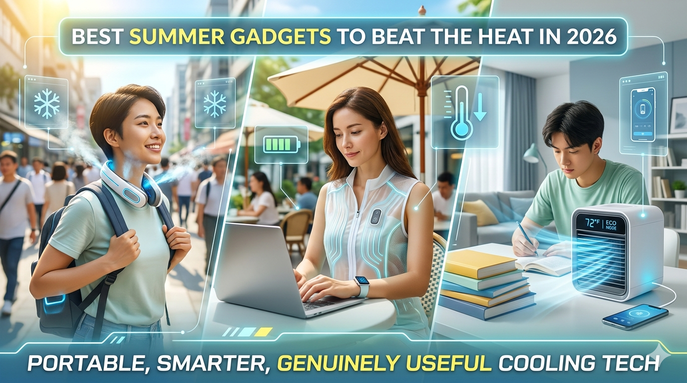

Blog Post
Published - May 14, 2026
Best Summer Gadgets to Beat the Heat in 2026
Summer can be exciting, but extreme heat often makes daily life uncomfortable. In 2026, cooling technology has become more portable, smarter, and genuinely useful—so you can stay comfortable while commuting, working outdoors, studying at home, or simply walking outside.

Summer can be exciting, but extreme heat often makes daily life uncomfortable. Whether you are traveling to work, riding a bike, studying at home, or simply walking outside, hot weather can quickly become exhausting. That is why cooling gadgets are becoming increasingly popular. Modern technology has introduced portable fans, cooling sprays, smart bottles, and wearable cooling systems that help people stay comfortable even during intense heat waves.
In this article, we explore some of the most interesting and innovative summer gadgets designed to keep you cool and hydrated. These gadgets range from simple portable devices to advanced wearable cooling systems. If you also rely on your phone while commuting or traveling, it is worth learning how to create an unhackable password in 3 seconds so your essential accounts stay protected on the go.
1. Waist Fan - A Portable Personal Cooling System
One of the most practical gadgets featured is the waist fan. This small wearable fan clips onto your waist or belt and blows air upward toward your body and face. Despite its compact size, it produces surprisingly powerful airflow.
The design is simple yet effective. Air is pulled in from the back and pushed upward through a strong blower fan. Users can adjust the fan speed depending on how hot the environment is. For people who travel daily in hot weather, especially motorbike riders, delivery workers, or outdoor employees, this gadget can provide constant airflow and reduce sweating.
Another useful feature is portability. The fan is lightweight enough to fit inside a backpack, making it easy to carry anywhere. Some versions even include a neck strap so users can wear it around the neck instead of clipping it to the waist.
What makes the gadget even more practical is that it also works as a mini flashlight and a power bank for charging smartphones. That means it can still be useful during power outages, long commutes, or emergencies. People carrying phones and payment apps outdoors should also review identity theft prevention steps to reduce risk while using connected devices in public places.
Pros
- Strong airflow
- Portable and lightweight
- Rechargeable battery
- Can charge phones
- Useful for outdoor travel
Cons
- Fan noise may be noticeable
- Appearance may look unusual in public
Overall, the waist fan is one of the most useful and affordable summer gadgets available today.
2. Cooling Spray - Instant Cold Feeling
Another interesting product is the cooling spray, a Japanese-style cooling solution designed for instant relief from heat.
This spray can be applied directly onto clothes or sometimes even onto the skin. After spraying, the fabric immediately feels cold, almost as if it had been placed inside a freezer. The effect becomes even stronger when wind or airflow hits the sprayed area.
The cooling spray is especially useful in situations where surfaces become too hot under the sun. For example:
- Car seats
- Bike seats
- Helmets
- Shirts and jackets
Instead of waiting for surfaces to cool naturally, users can simply spray the area and get immediate relief.
People who spend long hours outdoors may find this gadget extremely helpful during peak summer temperatures. However, users should still check skin safety instructions before applying directly to the body.
Pros
- Instant cooling effect
- Easy to carry
- Works on clothes and surfaces
- Good for bike riders and travelers
Cons
- Cooling effect is temporary
- Some products may irritate sensitive skin
Even though it is a simple product, the cooling spray can make summer travel far more comfortable.
3. Solar Fan Cap - Solar Energy Meets Fashion
The solar fan cap is one of the most creative gadgets on the list. It combines a regular cap with a small solar-powered fan mounted at the front.
The fan starts automatically whenever sunlight hits the solar panel on top of the cap. Since it uses solar energy, there is no need for batteries or charging cables.
The idea behind the product is smart: while the sun powers the fan, the fan simultaneously cools the user's face and forehead. This makes it especially useful for:
- Outdoor workers
- Hikers
- Gardeners
- Cyclists
The fan activates almost instantly in sunlight, which demonstrates how efficiently the small solar panel works.
However, while the gadget is innovative, some people may hesitate to wear it publicly because of its unusual appearance. It looks more like a science project than a fashionable accessory.
Pros
- Runs on solar power
- No charging required
- Lightweight and eco-friendly
- Works instantly in sunlight
Cons
- Looks unusual
- Cooling power is moderate
Despite its funny appearance, the solar fan cap is an excellent example of creative summer technology.
4. Cooling Jacket - Wearable Air Conditioning
Perhaps the most impressive gadget in the lineup is the cooling jacket. This wearable cooling system contains built-in fans powered by rechargeable power banks.
The fans are attached inside the jacket and pull air through the clothing, creating airflow around the body. Once activated, the jacket inflates slightly and circulates cool air inside, almost like a personal air-conditioning system.
Even when outdoor temperatures stay high, the circulating air inside the jacket can create a cooling sensation across the chest and upper body. This type of product is especially useful for construction workers, street vendors, warehouse employees, and delivery workers who spend long hours in the heat.
Heatstroke is a serious risk during extreme summers, and wearable cooling systems like this can potentially help reduce overheating. If you are also trying to stay efficient during long workdays, these AI productivity hacks can help you manage time and routine tasks more effectively.
Pros
- Very effective airflow
- Good for outdoor workers
- Rechargeable system
- Long battery life with extra power banks
Cons
- Bulky design
- Loud fans
- Not fashionable
For people who regularly work under direct sunlight, this gadget could be a valuable investment.
5. Portable Mini Air Conditioner
The next gadget is a compact portable air conditioner with both cooling and heating modes.
Unlike traditional AC units, this mini version is lightweight and easy to place on a desk or mount on a wall. The device includes adjustable temperature controls and multiple operating modes.
Interestingly, the heating function works extremely well. Warm air starts blowing almost immediately after switching modes. However, the cooling performance is usually more limited.
Although the device technically produces cool air, the airflow is often only slightly colder than normal room temperature. It is not powerful enough to cool an entire room during extreme summer heat.
In many cases, it works better as a heater and is not ideal for very hot climates.
Pros
- Compact and portable
- Includes heating and cooling
- Easy setup
Cons
- Weak cooling performance
- Cannot cool large rooms effectively
For summer use, a traditional cooler or stronger AC unit may still be the better option.
6. Ultrasonic Mosquito Repellent
Summer heat also brings mosquitoes and insects. To solve this problem, many people turn to an ultrasonic mosquito repellent gadget.
Instead of using chemicals or smoke, this device emits ultrasonic sound waves that insects supposedly dislike. The sound is not harmful to humans but is intended to repel mosquitoes.
This approach is considered safer than chemical repellents, especially for babies, children, and indoor use. Hotels and resorts often use similar systems to reduce insect activity in outdoor areas.
Pros
- No chemicals
- Safe for children
- Silent operation
- Portable
Cons
- Effectiveness may vary
- Scientific results are mixed
Even if results differ depending on conditions, many users prefer ultrasonic repellents because they avoid smoke and chemical exposure.
7. Smart Water Bottle - Stay Hydrated
Hydration is one of the most important parts of surviving summer heat. The smart water bottle helps users remember to drink water regularly.
The bottle contains a timer system that beeps at intervals, lights up as a reminder, and glows visually when activated. The reminder continues until the user drinks water.
This gadget is especially useful for people who forget to drink water, work long hours, or stay focused on screens or studies. Dehydration during summer can lead to dizziness, weakness, and heat exhaustion, so regular reminders can genuinely improve health.
Pros
- Encourages hydration
- Simple and effective
- Attractive glowing design
Cons
- Not necessary for disciplined users
Still, for busy people who forget to drink water, this smart bottle can be surprisingly useful.
Final Thoughts
Summer gadgets are becoming smarter, smaller, and more creative every year. While some products are mainly fun experiments, others genuinely improve comfort and safety during extreme heat.
Among all the gadgets discussed, the cooling jacket and waist fan appear to be the most practical for everyday use. Meanwhile, products like the solar cap and cooling spray show how innovation can transform simple ideas into useful summer solutions.
As global temperatures continue rising, personal cooling technology may soon become a normal part of everyday life rather than just novelty gadgets.